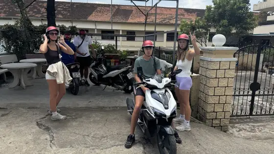

Tanpa deposit wang tunai — apa maksudnya
Di Van Phu kami tidak meminta deposit wang tunai untuk mana-mana motosikal: Honda Vision 110cc, Honda Air Blade 125cc atau skuter elektrik. Sebaliknya, anda tinggalkan pasport (atau kad pengenalan bagi tetamu Vietnam) di kedai sepanjang tempoh sewaan. Apabila motosikal dipulangkan, dokumen anda terus diserahkan semula. Jadi sewa motosikal Dalat tanpa deposit wang tunai memang cara kami bekerja selama ini — bukan tawaran istimewa.
Bayaran sewa dibuat lebih awal: 150,000 VND sehari untuk semua motosikal, harga tetap. Panduan harga sewa kami menerangkan dengan tepat apa yang termasuk.
Kenapa dokumen, bukan wang tunai
Deposit wang tunai bermakna membawa banyak wang, mengiranya dua kali dan risau sama ada ia akan dipulangkan. Dokumen lebih mudah untuk kedua-dua pihak: anda tidak perlu mengeluarkan wang tambahan, dan kami tahu motosikal akan dipulangkan. Ini cara biasa menyewa skuter di Vietnam.
Apa yang perlu dibawa
- Pasport (tetamu asing) atau kad pengenalan (tetamu Vietnam).
- Bayaran sewa untuk bilangan hari yang anda perlukan.
- Telefon dengan WhatsApp, Zalo, Telegram atau WeChat, supaya kita boleh terus berhubung sepanjang tempoh sewaan.
Tip: ambil gambar pasport anda dan simpan dalam telefon. Banyak hotel di Vietnam meminta untuk melihat atau mengimbas pasport semasa daftar masuk, jadi paling mudah daftar masuk dahulu, kemudian baru ambil motosikal.
Langkah demi langkah
- Hantar mesej kepada kami dengan tarikh dan motosikal yang anda mahu.
- Semasa pengambilan, anda cuba tunggang sebentar dan kita rakam video pendek keadaan motosikal bersama-sama.
- Anda tinggalkan pasport atau kad pengenalan dan bayar sewa.
- Anda dapat topi keledar dan pemegang telefon percuma; skuter petrol diisi 1 liter minyak.
- Pulangkan motosikal sebelum 21.00 pada hari terakhir — satu hari sewa dikira dari waktu pengambilan hingga 21.00 — dan dokumen anda dipulangkan serta-merta.
Adakah pasport saya selamat?
Dokumen anda disimpan dengan selamat di kedai dan hanya diserahkan kepada anda, orang yang menyewa motosikal. Sebelum bertolak, pastikan nama dalam tempahan sama dengan nama dalam pasport, dan simpan kenalan kedai dalam telefon anda. Jika rancangan berubah dan anda perlukan pasport lebih awal — contohnya untuk penerbangan atau tiket bas — beritahu kami dan pulangkan motosikal dahulu.
Perlu tahu
- Video semasa pengambilan melindungi anda: ia menunjukkan keadaan motosikal sebelum anda menunggang.
- Jika anda lewat pada hari pemulangan, hantar mesej kepada kami sebelum 21.00.
- Tiada alkohol atau bir semasa menunggang, dan patuhi undang-undang jalan raya Vietnam dengan ketat.

Tempah tanpa deposit wang tunai
Mahu sewa motosikal Dalat tanpa deposit? Hantar tarikh anda melalui WhatsApp (+84 944 081 101) atau Zalo (0944 081 101) dan kami akan simpan sebuah motosikal untuk anda. Semua motosikal, harga dan syarat ada di halaman sewa motosikal Da Lat kami; jika anda memilih skuter elektrik, lihat juga halaman skuter elektrik.
Ada soalan tentang Da Lat?
Kami boleh bantu tentang laluan, cuaca dan tempahan motosikal — hantar mesej melalui WhatsApp.
Mesej di WhatsAppSewa motosikal di Da Lat
Honda Vision, Honda Air Blade 125cc dan skuter elektrik — 150,000 VND sehari, tiada deposit wang, topi keledar percuma, hantar ke hotel untuk sewaan 2 hari ke atas.